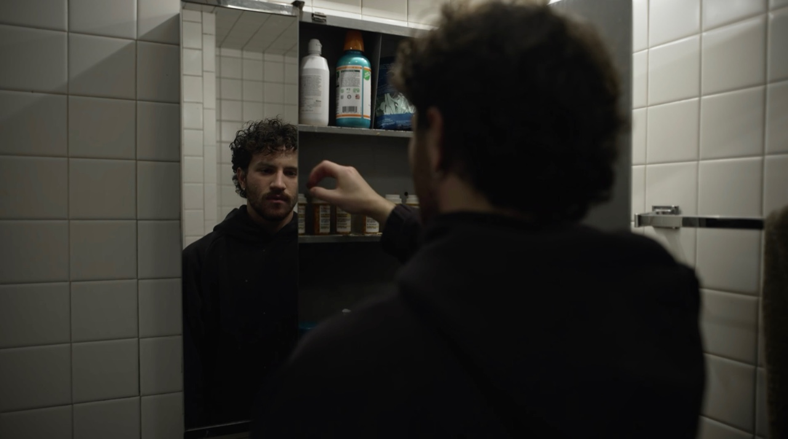
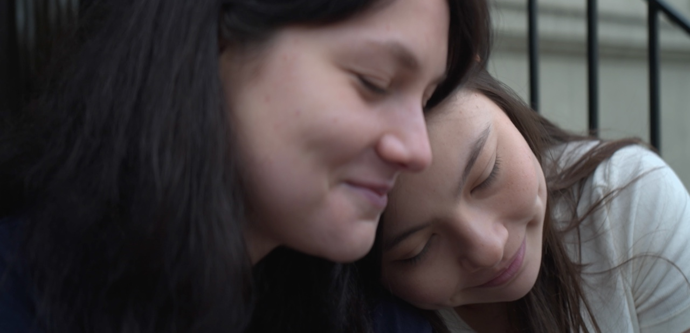
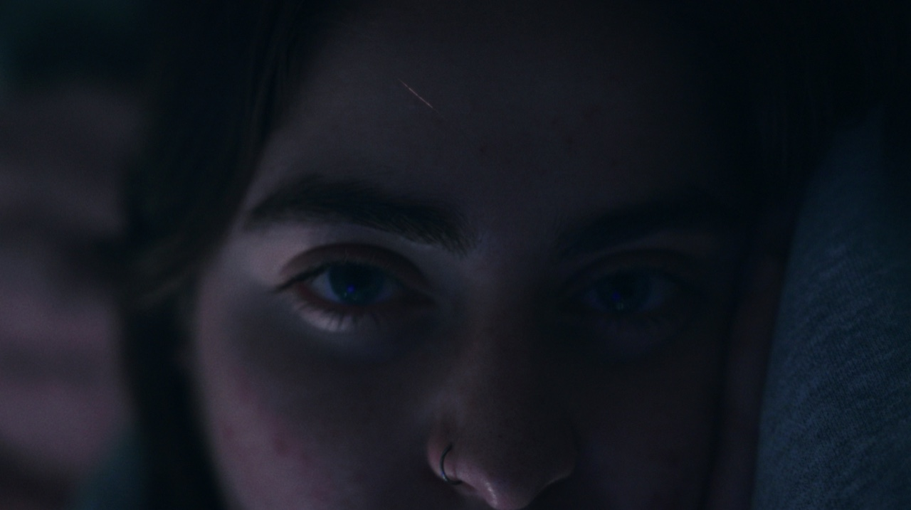
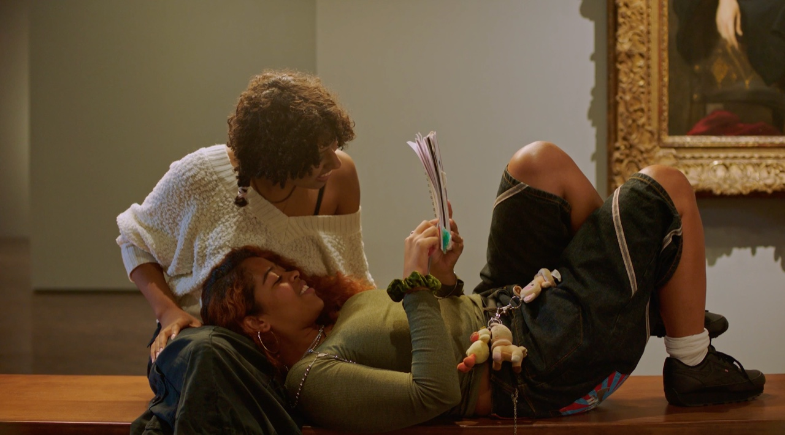

director of photography
ephemeral (2026)
directed by logan cranford

director of photography
ring a bell (2026)
directed by emma hagert

director of photography and colorist
all that we see (2026)
directed by danielle zeldis

director of photography
nothing like the sun (2024)
directed by cierra collier